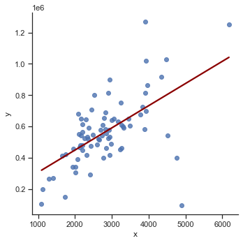
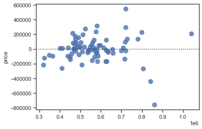

Scikit-learn
Contents
Scikit-learn#
In this tutorial, we will build a model with the Python scikit-learn module. Additionally, you will learn how to create a data preprocessing pipline.
Data preparation#
import pandas as pd
ROOT = "https://raw.githubusercontent.com/kirenz/modern-statistics/main/data/"
DATA = "duke-forest.csv"
df = pd.read_csv(ROOT + DATA)
# drop column with too many missing values
df = df.drop(['hoa'], axis=1)
# drop remaining row with one missing value
df = df.dropna()
# Drop irrelevant features
df = df.drop(['url', 'address'], axis=1)
# Convert data types
categorical_list = ['type', 'heating', 'cooling', 'parking']
for i in categorical_list:
df[i] = df[i].astype("category")
# drop irrelavant columns
df = df.drop(['type', 'heating', 'parking'], axis=1)
Data preprocessing pipeline#
# Modules
from sklearn.compose import ColumnTransformer
from sklearn.compose import make_column_selector as selector
from sklearn.pipeline import Pipeline
from sklearn.impute import SimpleImputer
from sklearn import set_config
from sklearn.preprocessing import StandardScaler, OneHotEncoder
# for numeric features
# we use Pipeline(), SimpleImputer with median
numeric_transformer = ___(steps=[
('imputer', SimpleImputer(strategy='___')),
('scaler', StandardScaler())
])
# for categorical features
# use OneHotEncoder
categorical_transformer = Pipeline(steps=[
('imputer', SimpleImputer(strategy='constant', fill_value='missing')),
('onehot', ___(handle_unknown='ignore'))
])
# Pipeline
# ColumnTransformer
preprocessor = ___(transformers=[
('num', ___, selector(dtype_exclude="category")),
('cat', ___, selector(dtype_include="category"))
])
Simple regression#
# Select features for simple regression
features = ['area']
X = df[___]
# Create response
y = df["___"]
# check feature
X.info()
<class 'pandas.core.frame.DataFrame'>
Int64Index: 97 entries, 0 to 97
Data columns (total 1 columns):
# Column Non-Null Count Dtype
--- ------ -------------- -----
0 area 97 non-null int64
dtypes: int64(1)
memory usage: 1.5 KB
# check label
y
0 1520000
1 1030000
2 420000
3 680000
4 428500
...
93 541000
94 473000
95 490000
96 815000
97 674500
Name: price, Length: 97, dtype: int64
# check for missing values
print("Missing values X:",X.isnull().any(axis=1).sum())
print("Missing values Y:",y.isnull().sum())
Missing values X: 0
Missing values Y: 0
Data splitting#
from sklearn.model_selection import train_test_split
# Train Test Split
# Use random_state to make this notebook's output identical at every run
X_train, X_test, y_train, y_test = train_test_split(X, y, test_size=0.2, random_state=42)
Modeling#
from sklearn.linear_model import LinearRegression
# Create pipeline with model
lm_pipe = Pipeline(steps=[
('preprocessor', preprocessor),
('lm', LinearRegression())
])
# show pipeline
set_config(display="diagram")
# Fit model
lm_pipe.fit(X_train, y_train)
Pipeline(steps=[('preprocessor',
ColumnTransformer(transformers=[('num',
Pipeline(steps=[('imputer',
SimpleImputer(strategy='median')),
('scaler',
StandardScaler())]),
<sklearn.compose._column_transformer.make_column_selector object at 0x7fd057eb4a30>),
('cat',
Pipeline(steps=[('imputer',
SimpleImputer(fill_value='missing',
strategy='constant')),
('onehot',
OneHotEncoder(handle_unknown='ignore'))]),
<sklearn.compose._column_transformer.make_column_selector object at 0x7fd058f4dbe0>)])),
('lm', LinearRegression())])Please rerun this cell to show the HTML repr or trust the notebook.Pipeline(steps=[('preprocessor',
ColumnTransformer(transformers=[('num',
Pipeline(steps=[('imputer',
SimpleImputer(strategy='median')),
('scaler',
StandardScaler())]),
<sklearn.compose._column_transformer.make_column_selector object at 0x7fd057eb4a30>),
('cat',
Pipeline(steps=[('imputer',
SimpleImputer(fill_value='missing',
strategy='constant')),
('onehot',
OneHotEncoder(handle_unknown='ignore'))]),
<sklearn.compose._column_transformer.make_column_selector object at 0x7fd058f4dbe0>)])),
('lm', LinearRegression())])ColumnTransformer(transformers=[('num',
Pipeline(steps=[('imputer',
SimpleImputer(strategy='median')),
('scaler', StandardScaler())]),
<sklearn.compose._column_transformer.make_column_selector object at 0x7fd057eb4a30>),
('cat',
Pipeline(steps=[('imputer',
SimpleImputer(fill_value='missing',
strategy='constant')),
('onehot',
OneHotEncoder(handle_unknown='ignore'))]),
<sklearn.compose._column_transformer.make_column_selector object at 0x7fd058f4dbe0>)])<sklearn.compose._column_transformer.make_column_selector object at 0x7fd057eb4a30>
SimpleImputer(strategy='median')
StandardScaler()
<sklearn.compose._column_transformer.make_column_selector object at 0x7fd058f4dbe0>
SimpleImputer(fill_value='missing', strategy='constant')
OneHotEncoder(handle_unknown='ignore')
LinearRegression()
# Obtain model coefficients
lm_pipe.named_steps['lm'].coef_
array([128046.72300033])
Evaluation with training data#
There are various options to evaluate a model in scikit-learn. Review this overview about metrics and scoring: quantifying the quality of predictions.
X_train.head()
| area | |
|---|---|
| 49 | 2902 |
| 71 | 2165 |
| 69 | 1094 |
| 15 | 2750 |
| 39 | 2334 |
y_pred = lm_pipe.predict(X_train)
from sklearn.metrics import r2_score
r2_score(y_train, y_pred)
0.35694914972541525
from sklearn.metrics import mean_squared_error
mean_squared_error(y_train, y_pred)
29537647395.092514
# RMSE
mean_squared_error(y_train, y_pred, squared=False)
171865.20123367765
from sklearn.metrics import mean_absolute_error
mean_absolute_error(y_train, y_pred)
115668.27028304595
%matplotlib inline
import seaborn as sns
sns.set_theme(style="ticks")
# Plot with Seaborn
# We first need to create a DataFrame
df_train = pd.DataFrame({'x': X_train['area'], 'y':y_train})
sns.lmplot(x='x', y='y', data=df_train, line_kws={'color': 'darkred'}, ci=False);

import plotly.io as pio
import plotly.offline as py
import plotly.express as px
# Plot with Plotly Express
fig = px.scatter(x=X_train['area'], y=y_train, opacity=0.65,
trendline='ols', trendline_color_override='darkred');
fig.show()
sns.residplot(x=y_pred, y=y_train, scatter_kws={"s": 80});

Let’s take a look at the wrongest predictions:
# create dataframe
df_error = pd.DataFrame(
{ "y": y_train,
"y_pred": y_pred,
"error": y_pred - y_train
})
# sort by error, select top 10 and get index
error_index = df_error.sort_values(by=['error']).nlargest(10, 'error').index
# show corresponding data observations
df.iloc[error_index]
| price | bed | bath | area | year_built | cooling | lot | |
|---|---|---|---|---|---|---|---|
| 65 | 609000 | 5 | 4.0 | 3175 | 2016 | other | 0.47 |
| 84 | 567000 | 4 | 4.0 | 3931 | 1982 | other | 0.39 |
| 88 | 480000 | 2 | 2.0 | 2203 | 1984 | other | 0.42 |
| 55 | 150000 | 3 | 1.0 | 1734 | 1945 | other | 0.16 |
| 19 | 290000 | 3 | 2.5 | 2414 | 1956 | other | 0.48 |
| 70 | 520000 | 4 | 3.0 | 2637 | 1968 | other | 0.65 |
| 16 | 452500 | 3 | 2.5 | 3234 | 1941 | other | 0.61 |
| 92 | 590000 | 5 | 3.0 | 3323 | 1980 | other | 0.43 |
| 48 | 416000 | 5 | 3.0 | 2949 | 1955 | other | 0.55 |
| 57 | 400000 | 4 | 3.0 | 2771 | 1958 | central | 0.52 |
Evaluation with test data#
y_pred = lm_pipe.predict(X_test)
print('MSE:', mean_squared_error(y_test, y_pred))
print('RMSE:', mean_squared_error(y_test, y_pred, squared=False))
MSE: 23209825917.075768
RMSE: 152347.7138557575
# Plot with Plotly Express
fig = px.scatter(x=X_test['area'], y=y_test, opacity=0.65,
trendline='ols', trendline_color_override='darkred')
fig.show()
Model generalization on unseen data (see plotly documentation)
import numpy as np
import plotly.graph_objects as go
x_range = pd.DataFrame({ 'area': np.linspace(X_train['area'].min(), X_train['area'].max(), 100)})
y_range = lm_pipe.predict(x_range)
go.Figure([
go.Scatter(x=X_train.squeeze(), y=y_train, name='train', mode='markers'),
go.Scatter(x=X_test.squeeze(), y=y_test, name='test', mode='markers'),
go.Scatter(x=x_range.area, y=y_range, name='prediction')
])
Multiple regression#
# Select features for multiple regression
features= [
'bed',
'bath',
'area',
'year_built',
'cooling',
'lot'
]
X = df[features]
X.info()
print("Missing values:",X.isnull().any(axis = 1).sum())
# Create response
y = df["price"]
<class 'pandas.core.frame.DataFrame'>
Int64Index: 97 entries, 0 to 97
Data columns (total 6 columns):
# Column Non-Null Count Dtype
--- ------ -------------- -----
0 bed 97 non-null int64
1 bath 97 non-null float64
2 area 97 non-null int64
3 year_built 97 non-null int64
4 cooling 97 non-null category
5 lot 97 non-null float64
dtypes: category(1), float64(2), int64(3)
memory usage: 4.8 KB
Missing values: 0
# Data splitting
X_train, X_test, y_train, y_test = train_test_split(X, y, test_size=0.2, random_state=42)
# Create pipeline with model
lm_pipe = Pipeline(steps=[
('preprocessor', preprocessor),
('lm', LinearRegression())
])
# show pipeline
set_config(display="diagram")
# Fit model
lm_pipe.fit(X_train, y_train)
Pipeline(steps=[('preprocessor',
ColumnTransformer(transformers=[('num',
Pipeline(steps=[('imputer',
SimpleImputer(strategy='median')),
('scaler',
StandardScaler())]),
<sklearn.compose._column_transformer.make_column_selector object at 0x7fdb7e834040>),
('cat',
Pipeline(steps=[('imputer',
SimpleImputer(fill_value='missing',
strategy='constant')),
('onehot',
OneHotEncoder(handle_unknown='ignore'))]),
<sklearn.compose._column_transformer.make_column_selector object at 0x7fdb7e834070>)])),
('lm', LinearRegression())])Please rerun this cell to show the HTML repr or trust the notebook.Pipeline(steps=[('preprocessor',
ColumnTransformer(transformers=[('num',
Pipeline(steps=[('imputer',
SimpleImputer(strategy='median')),
('scaler',
StandardScaler())]),
<sklearn.compose._column_transformer.make_column_selector object at 0x7fdb7e834040>),
('cat',
Pipeline(steps=[('imputer',
SimpleImputer(fill_value='missing',
strategy='constant')),
('onehot',
OneHotEncoder(handle_unknown='ignore'))]),
<sklearn.compose._column_transformer.make_column_selector object at 0x7fdb7e834070>)])),
('lm', LinearRegression())])ColumnTransformer(transformers=[('num',
Pipeline(steps=[('imputer',
SimpleImputer(strategy='median')),
('scaler', StandardScaler())]),
<sklearn.compose._column_transformer.make_column_selector object at 0x7fdb7e834040>),
('cat',
Pipeline(steps=[('imputer',
SimpleImputer(fill_value='missing',
strategy='constant')),
('onehot',
OneHotEncoder(handle_unknown='ignore'))]),
<sklearn.compose._column_transformer.make_column_selector object at 0x7fdb7e834070>)])<sklearn.compose._column_transformer.make_column_selector object at 0x7fdb7e834040>
SimpleImputer(strategy='median')
StandardScaler()
<sklearn.compose._column_transformer.make_column_selector object at 0x7fdb7e834070>
SimpleImputer(fill_value='missing', strategy='constant')
OneHotEncoder(handle_unknown='ignore')
LinearRegression()
# Obtain model coefficients
lm_pipe.named_steps['lm'].coef_
array([ 37501.22436002, 50280.7007969 , 30312.97805437, 27994.3520344 ,
79024.39994917, 23467.73502737, -23467.73502737])
Evaluation with test data:
y_pred = lm_pipe.predict(X_test)
r2_score(y_test, y_pred)
0.4825836731448806